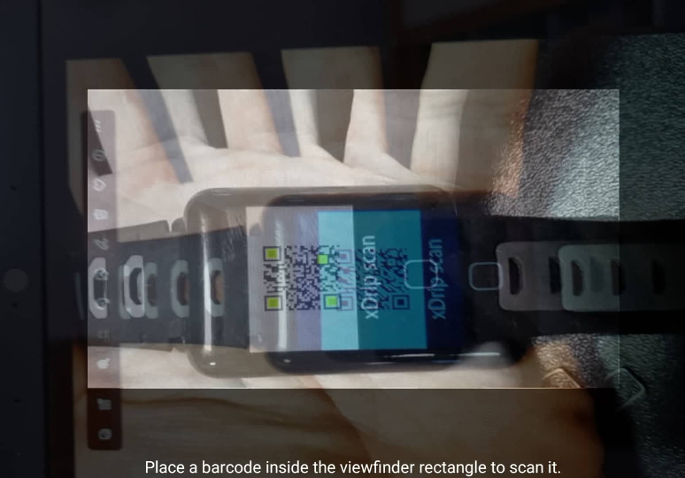
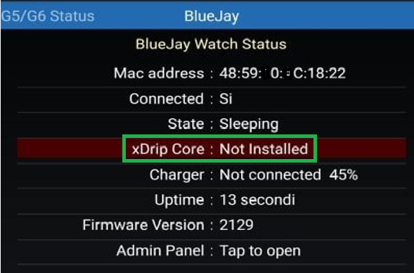

BlueJay Watch

 Smart Watch Features
Smart Watch Features
BlueJay Watch
You can buy your BlueJay Watch here: 
Two new generations of BlueJay are available.
X2 is not sold anymore.
GTS can be setup without xDrip+ (only standalone) and also with xDrip+.
U1 is beta and runs the full xDrip+ package.
U2 is released.
Sharing BG
BlueJay X2/GTS are only Bluetooth and cannot share BG data without being connected to your phone xDrip+.
BlueJay watches are powerful companions for your G6, G7 and 1/1+ sensors. They connect directly to the transmitter but you need to be aware of the limitations.
G6/G7 and 1/1+⌁
These transmitters have two Bluetooth slots: phone and non-phone.
You can configure your slots as per the table below. Only two devices can be connected simultaneously to the transmitter, each one using a unique slot.
By default BlueJay uses the non-phone slot. See here for GTS how to change this setting.
U1 and U2 need to be connected first to the sensor. Once connected, you can also enable the second connection and the watch will automatically select the available free slot.
| Vendor app | Receiver | Connected pump | BlueJay Watch |
|---|---|---|---|
| Cannot be used | Cannot be used | Cannot be used | Non-phone slot xDrip+ uses phone slot |
| Uses phone slot | Cannot be used | Cannot be used | Non-phone slot |
| Cannot be used | Uses non-phone slot | Cannot be used | Phone slot |
| Cannot be used | Cannot be used | t:slim, Omnipod 5 use non-phone slots | Phone slot |
| Cannot be used | Cannot be used | CamAPS, DBLG1 use phone slot | Non-phone slot |
Note: xDrip+ uses the phone slot by default, non-phone slot requires engineering mode
Pair your watch to xDrip+ (X2 and GTS)⌁
1 - Make sure the watch is charged before starting.
2 - Enable BlueJay and disable watch collector.
BlueJay Watch 
Run Collector 
3 - If you have a BlueJay GTS continue to 6.
If you have a BlueJay X2 it should show a QR code on the screen.

If you see it continue to 7.
4 - Launch BlueJay Panel and Scan.
Launch BlueJay Panel
When the watch is detected you should see its Mac address. Select it.
If xDrip+ doesn't find the watch, try to restart your phone and retry. If you still can't find it: you can enter the watch Mac address manually here
BlueJay Advanced Settings
BlueJay Mac
The QR code should now appear on the watch, if you see it: continue to 7.
5 - If the QR code didn't show-up on your watch, select QR and retry.

If you still can't see the QR code try REBOOT then contact the vendor for assistance or seek help here.
6 - On the GTS follow this menu sequence to display the QR code:
Settings Menu -> Admin Menu -> Show QR Code

7 - In xDrip+ scan the watch QR code
Auto Configure
You need to authorize xDrip+ to access the phone camera.
Scan the QR code displayed on the watch.

Setup the watch as a follower and you should see your BG within minutes.
BlueJay Watch
Run Collector
Send Readings 
Check System Status to confirm the watch paired correctly. Swipe to the advanced status tab BlueJay.
If the xDrip core is not installed you should install it now.
Install the xDrip Core⌁
Put the watch in charge whilst installing the core
In xDrip+ System Status, BlueJay advanced status, tap the red line xDrip Core: Not Installed.

Select OK to update the watch.

Check System Status afterwards, you should see the core installed.
Run collector⌁
Run collector means you will be using the watch without having necessarily your phone with you.
You must setup the watch using xDrip+ if you use an X2 model.
For GTS you can do it directly through the watch menu, without using xDrip+.
In order to use the watch with xDrip+ you must have a transmitter directly connected to xDrip+ with BG data currently displaying in xDrip+.
Define which slot will connect to the transmitter. Refer to the table above to setup your slots.
BlueJay Advanced Settings
Run Phone Collector⌁
Run Phone Collector
Also run the standard collector on this phone. Only turn this off if you don't want this phone itself to be connecting to the transmitter.
Enables/disable the connection of xDrip+ to the transmitter (using the phone slot).
BlueJay uses Phone slot⌁
BlueJay uses Phone slot
This allows the BlueJay to occupy the phone slot on the transmitter. Select this if you want another non-phone device to be able to connect to the transmitter and you are not using a phone to connect to the transmitter.
By default BlueJay uses the non-phone slot. You can let it use the phone slot with this option but you should then disable Run Phone Collector above.
Once slots setup you can enable the watch as a standalone collector device.
BlueJay Watch
Run Collector
You will then see your phone xDrip+ is not connected to the transmitter anymore: BlueJay is.
When your watch is within Bluetooth range, your phone should receive BG from BlueJay.

BlueJay GTS⌁
GTS doesn't need xDrip+ to be setup but the steps above should also apply if you want to so so.
See the video here for a guided tour.
See here how to connect to the transmitter.